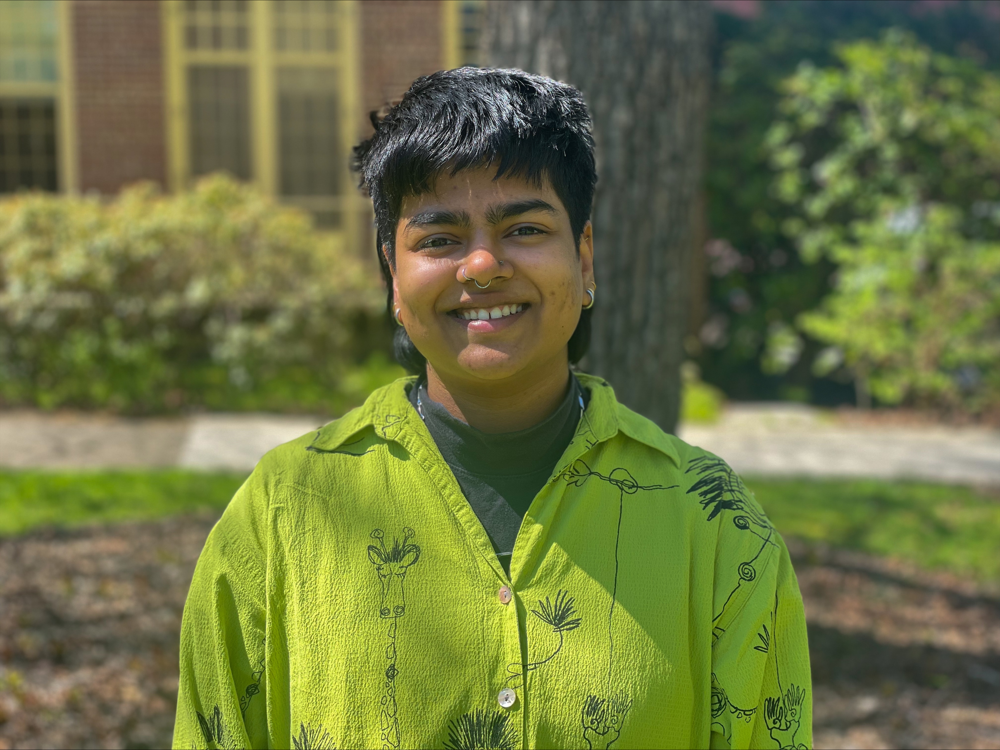

Ph.D. in Philosophy
Graduate Certificate in Women's, Gender, and Sexuality Studies

PhD Student · Philosophy & WGSS · University of Oregon
I work in feminist political philosophy. I research trans social reproduction, the philosophy of caste and caste-capitalism, and trans temporality and reproductive futurity. In my dissertation, I explore the stakes of trans reproduction and social reproduction for the material maintenance and circulation of caste and Hindu nationalism.
I am a PhD student in Philosophy and a Graduate Certificate student in Women's, Gender, and Sexuality Studies at the University of Oregon.
I try to cultivate a classroom where students feel comfortable being unsure or wrong when they answer, learn communally, and value their own and each other's lived experiences as an entrypoint into philosophy. When students are able to make connections between concepts and thinkers, and discover ideas themselves and through engagement with each other, they understand their capacity to engage in critical thought and to do philosophy. Making space for a diversity of voices, and responding to the need for a diversity of teaching practices allows me to build a space where students are empowered to question and critique, and most importantly, recognize themselves not just as recipients but active agents in their own education and as creators of knowledge in their own right.
Download a full copy of my CV, including complete publication list, conference presentations, grants, and service record.
Download CV (PDF) PDF